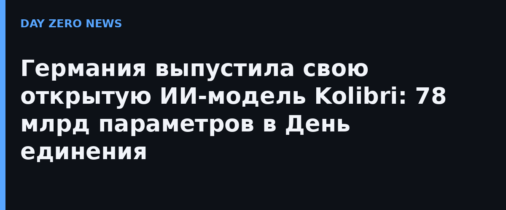

Немецкая Aleph Alpha выбрала символичную дату — День германского единения 3 октября — и выпустила Kolibri: англо-немечную модель архитектуры Mixture-of-Experts с 78 млрд параметров всего и всего ~3 млрд активных на токен. Модель умеет работать с контекстом до 1 млн токенов, полные веса выложены на Hugging Face, лицензия — Apache 2.0, то есть использовать можно свободно и в коммерческих продуктах.
Компания позиционирует Kolibri как «суверенную» модель: европейская разработка, европейская инфраструктура, двойная поддержка английского и немецкого. На фоне обсуждений в ЕС о зависимости от американских LLM это прямой ответ на запрос госсектора и регулируемых отраслей, которым важно, где физически считаются их данные. Показательно, что релиз случился через несколько дней после сделки Aleph Alpha с канадской Cohere — вместе они заявляли себя как первого трансатлантического «суверенного ИИ»-разработчика.
Ставка на маленькое активное число параметров — 3,46 млрд из 78 — означает, что модель должна быть быстрой и дешёвой в инференсе при приличном качестве: это тот же рецепт, что у современных MoE-флагманов, но с упором именно на немецкий язык и европейскую юрисдикцию. Для локального развёртывания на собственном железе это заметно привлекательнее закрытых API.
Отдельного российского анонса в этом же нишевом сегменте «открытой суверенной англо-немецкой модели», разумеется, нет — у нас свой трек с отечественными LLM. Но сам приём интересен: немцы упаковали локальность и открытый вес в маркетинг уровня государственного праздника, и это работает лучше, чем просто benchmarks-лист.